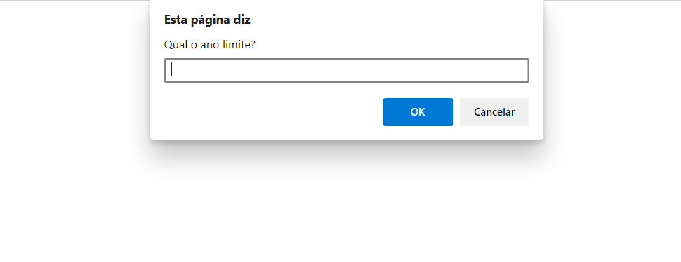

O Squad 3 é um dos grupos do projeto #TeuFuturo de 2021, sendo composto por três integrantes: Ana Fleischmann, Ana Wives e Vitor Burgarelli. O curso teve início em abril de 2021, sendo promovido pela IMED e a +PraTi.
Sobre nós
-
Ana Carolina Palma Fleischmann
Gaúcha, 17 anos, ingressou na programação por influência do seu pai, que cursou Ciência da Computação. Contudo, seu primeiro contato com a TI se deu em 2021, pois foi apresentada a área pela Olimpíada Nacional de Desenvolvimento de Aplicativos em 2020. Ana Fleischmann estuda no Colégio Tiradentes da Brigada Militar de Porto Alegre, no qual cursa o segundo ano do Ensino Médio. Em seu tempo livre, gosta de ler livros de ficção, assim como ouvir mpb e rap.
-
Ana Paula da Silva Wives
Ana Wives é apaixonada por leitura, música e idiomas, mas a sua mais nova paixão é a programação! Inspirada pelo irmão, que cursa e trabalha na área da TI, buscou esse caminho devido a sua curiosidade com seus 17 anos, onde encontrou o #TeuFuturo. Atualmente, estuda na Escola Técnica Estadual Parobé, no terceiro ano do Ensino Médio.
-
Vitor Cardoso Burgarelli
Nascido na cidade de São Paulo, Vitor tem 16 anos e cursa o segundo ano do Ensino Médio no Colégio Tiradentes da Brigada Militar de Porto Alegre. Seus hobbies são jogos online, assim como assistir vídeos variados no YouTube. Dessa forma começou seu interesse pela tecnologia, pois encontrou um ambiente de diversão e conhecimento.
Portfolio
-
Pong
A primeira atividade feita no #TeuFuturo foi o desenvolvimento do jogo Pong com a linguagem Scratch. Assim, foi possível desenvolver uma base da lógica de programação de uma forma simples e divertida.
Em seguida, foi programado o mesmo jogo, mas utilizando a linguagem JavaScript pelo P5.js. A partir disso, o pensamento computacional foi mais desenvolvido.
As habilidades desenvolvidas foram o uso de variáveis e funções. Também foi ensinado como criar um jogo completo, que possui controles, animações, placar e sons.
-
Freeway
O jogo Freeway foi a segunda tarefa proposta pelo #Teu Futuro, desenvolvido pelo P5.js com a linguagem JavaScript. Com esse projeto, foi possível aprimorar as habilidades anteriores de programação.
Com esse projeto, o grupo aprendeu a utilizar listas (arrays), a adicionar imagens no P5.js e a aperfeiçoar o pensamento computacional.
-

Lógica de Programação I
A fim de promover uma maior autonomia na programação, são propostas atividades variadas, tendo como principal foco introduzir HTML e JavaScript.
Ferramentas como laços, loops, fors e whiles são apresentadas mais profundamente. Uma das páginas criada tem o objetivo de exibir todos os anos que tiveram o evento Copa do Mundo, na qual o usuário determina o ano limite por meio de um pop-up.
-
Git e GitHub
O curso também proporciona um aprendizado quanto a sistemas de controle de versões, no caso, Git e GitHub. A equipe foi instigada a administrar arquivos trazidos pelo professor, levando ao aprendizado sobre o uso de tais sistemas.
-
Lógica de Programação II
Nesse módulo, o squad é estimulado a aprofundar seu conhecimento em JavaScript, com enfoque em suas funções. Além disso, o uso do Canvas é um dos tópicos em questão, como é visto na atividade que pede que seja exibido um Creeper - personagem do jogo MineCraft.
-

JavaScript
Nessa unidade, o estudante é encorajado a pôr em prática essa linguagem tão utilizada na web. Isso ocorre por meio de um projeto base que o curso fornece, no qual o grupo vai aperfeiçoando a página.
Com esse curso, aprende-se a manipular elementos da página, como utilizar e validar formulários, buscar dados em outro servidor com AJAX e a executar boas práticas de organização de código Javascript.
-

HTML5 e CSS3
A fim de desenvolver as habilidades no HTML e no CSS é proposto a construção de uma página web do zero. Esse curso apresenta quatro partes, em que na sua conclusão, o aluno detém de conhecimento suficiente para iniciar a construir páginas web com maior autonomia.
Jogos Clássicos
HTML, CSS e JavaScript
- ana.palma.fleischmann@gmail.com
- wivesanapaula@gmail.com
- vcburgarelli@gmail.com
Tem alguma dúvida?
Entre em contato conosco: